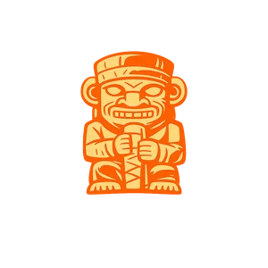
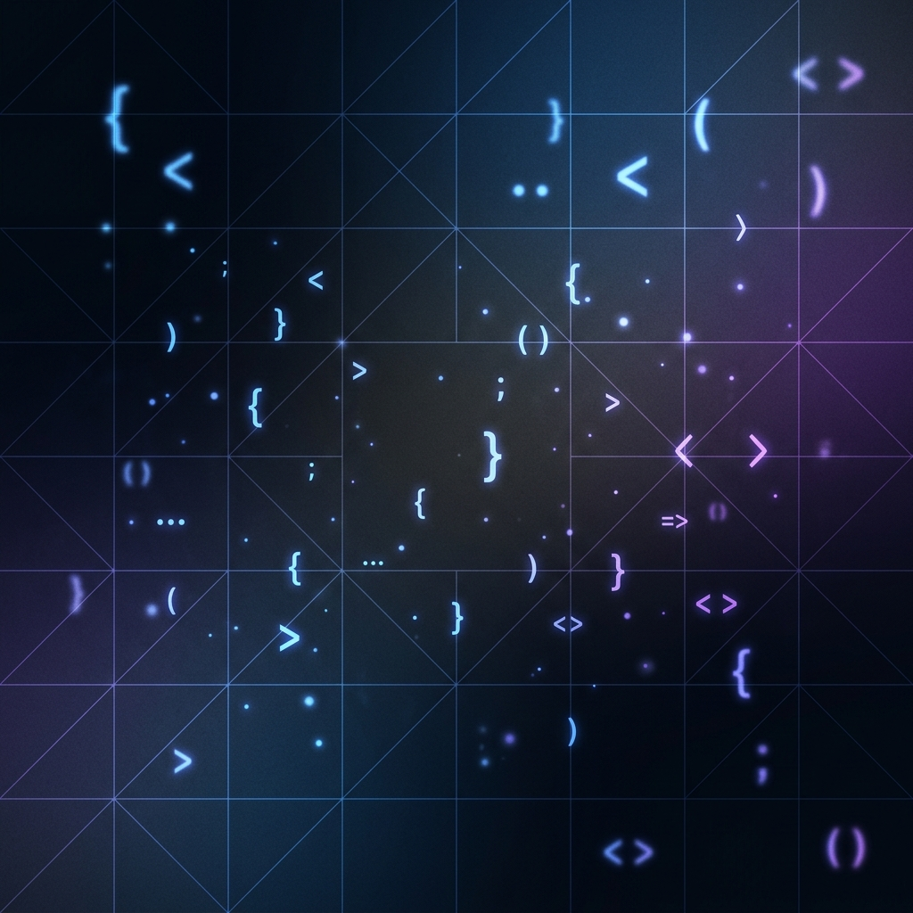

StayHuila
Plataforma web enfocada en el turismo rural que permite gestionar alojamientos, habitaciones y reservas, ofreciendo una experiencia digital moderna para usuarios y establecimientos turísticos del Huila.

Soy un Desarrollador de Software apasionado por la creación de soluciones digitales eficientes y bien diseñadas. Me encuentro actualmente en formación académica, construyendo una base técnica sólida en análisis, desarrollo e ingeniería de sistemas.
Mi enfoque está en el desarrollo web fullstack, combinando tecnologías de frontend para crear interfaces atractivas con backend robusto en Python/Flask, y persistencia de datos con MySQL.
Estudio Tecnología en Análisis y Desarrollo de Software en el SENA y simultáneamente curso Ingeniería de Sistemas en la UNAD. Disfruto enfrentar retos técnicos reales y convertirlos en software funcional. Cada proyecto es una oportunidad de aprender, crecer y aplicar buenas prácticas de desarrollo.
Actualmente disponible para proyectos freelance y colaboraciones. Si tienes una idea en mente, hablemos.
Herramientas y lenguajes con los que desarrollo soluciones.
Plataforma web enfocada en el turismo rural que permite gestionar alojamientos, habitaciones y reservas, ofreciendo una experiencia digital moderna para usuarios y establecimientos turísticos del Huila.

Sistema inteligente que utiliza OCR (Reconocimiento Óptico de Caracteres) para procesar documentos y extraer información relacionada con medicamentos. Automatiza la lectura y gestión de datos farmacéuticos con Tesseract y OpenCV.

APK de almacenamiento de datos con sincronización offline y optimización para dispositivos móviles. Sistema de gestión de datos que funciona sin conexión a internet y se sincroniza automáticamente cuando hay conectividad disponible.

Rellena el formulario y te respondo lo antes posible.